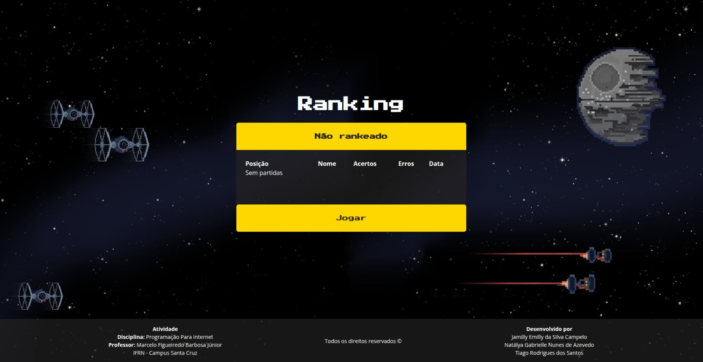
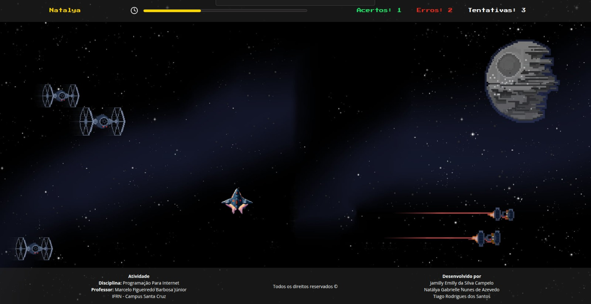
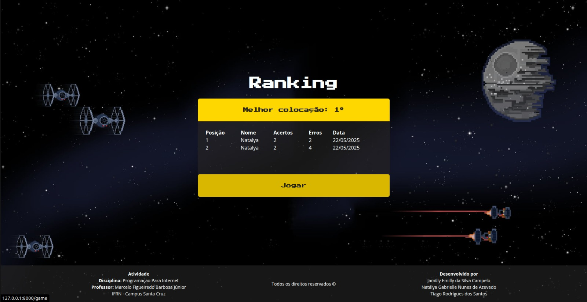

Galatic Shooter

Descrição
O Galatic Shooter é um jogo desenvolvido com Laravel que combina diversão e lógica de programação. O jogador testa sua mira em um desafio de tiro ao alvo, enquanto o sistema registra e avalia seu desempenho com base em estatísticas como acertos, erros, tentativas e tempo de jogo. A plataforma também conta com autenticação de usuários, ranking em tempo real e pódio dos melhores colocados.
Funcionalidades
- Cadastro e login de usuários
- Jogo de tiro ao alvo com contagem de acertos e erros
- Contabilização de tentativas e tempo total da partida
- Rankings atualizados com os melhores desempenhos
- Exibição de pódio
- Design responsivo e interativo
Tecnologias Utilizadas
- Laravel (backend)
- JavaScript
- TailwindCSS
- HTML
- CSS
Interface do Sistema
Abaixo você pode visualizar algumas telas do sistema:


